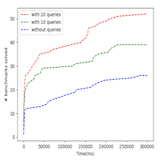
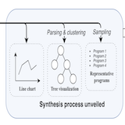
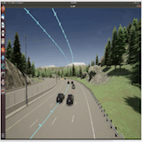

|
Research
I'm interested in programming languages, artificial intelligence, and human-computer interactions. In particular, I'm recently interested in program synthesis and (symbolic) search algorithms.
Specifically, here are some research questions which interest me most:
- Improve the intepretability, fairness, robustness, and safety of black-box like ML/AI systems.
- Incorporate human knowledge into a search process.
- Accelerate program search using interactive methods and learning techniques.
|
|
Publication
Tianyi Zhang, Zhiyang Chen, Yuanli Zhu, Priyan Vaithilingam, Xinyu Wang, Elena L. Glassman, “Interpretable
Program Synthesis”, Proceedings of the 2021 Conference on Human Factors in Computing Systems(CHI 2021)
|
|

|
Accelerate Regular Expresssion Synthesis via Subexpression Queries
Individual research project of EECS499
with Prof. Xinyu Wang
report
In this project, I proposed an algorithm to synthesize the most probable sub- expressions of the ground-truth regular expressions based on input-output examples. I evaluated and testified the effectiveness of sub-expression queries to accelerate regular expression synthesis.
|
|

|
Interpretable Program Synthesis
CHI '21: Proceedings of the 2021 Conference on Human Factors in Computing Systems
with Dr. Tianyi Zhang, Prof. Xinyu Wang, Prof. Elena Glassman
pdf
video
code
We propose a novel approach that unveils the synthesis process and enables users to monitor and guide the synthesis. We designed three representations that explain the underlying synthesis process with different levels of fidelity.
|
|

|
Real-Time and Virtual Driving Simulator
Project of Multidisciplinary Design Program(ENGR355)
with Prof. Paul Green
2-min presentation slides
code
We built a GUI tool to help human-vehicle interaction researchers design and conduct traffic experiments with CARLA real-time driving simulator.
|
Service and Volunteer Activities
- Grader of MATH 214 Linear Algebra, UMich, Fall 2020.
- Tutor of EECS 280 Programming and Intro Data Structures, UMich, Fall 2020
- Tau Beta Phi-Michigan Gamma, elected in Nov 2020 (attending a series of K12 and professional activities)
- Summer Buddy Volunteer, Summer 2019
- Publicity Department, UM-SJTU Joint Institute Student Union, 2017 - 2018
|
|
{kind=link}